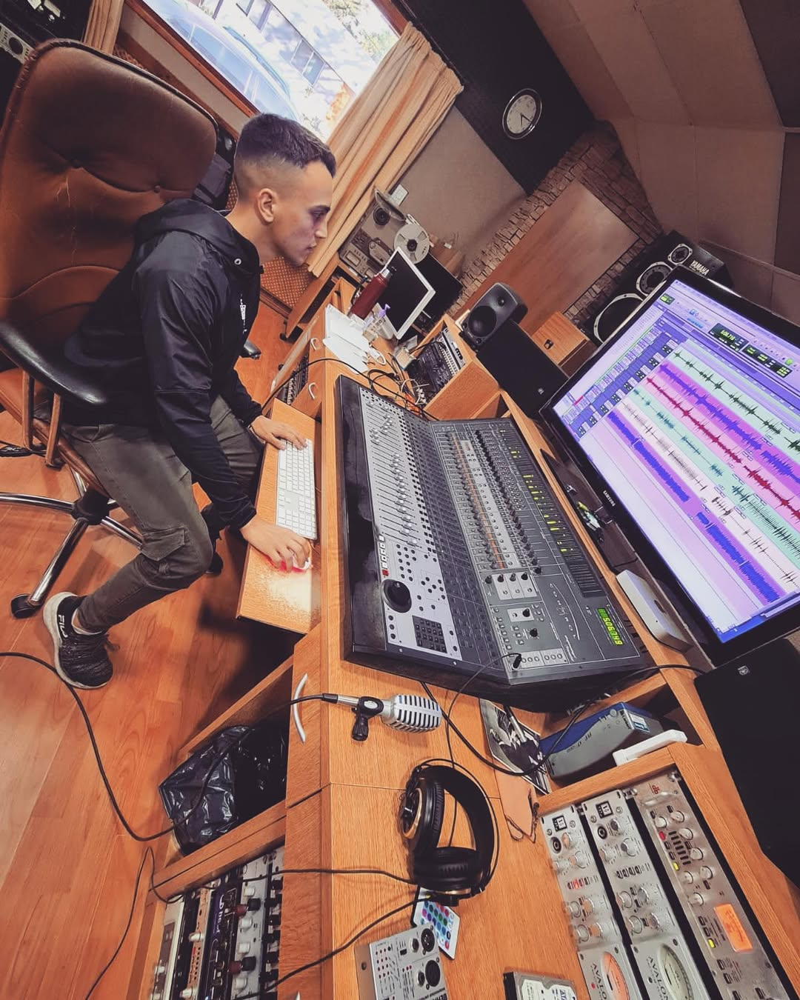

Soy Licenciado en Sonorización y Grabación graduado de la UNL. Fue una carrera que no solo me permitió comprender la belleza de la física del sonido desde su concepción,
sino que también me terminé de desarrollar como una persona multifacética. En la misma carrera aprendí por qué en Python puedo generar una onda senoidal de 440Hz (la nota La) con solo unas líneas de código usando Numpy y reproducirla con PyAudio,
al mismo tiempo que solfeaba y cantaba una obra de folklore, para luego comprender por qué Bach es un músico del barroco y en sus composiciones utilizaba mucho la textura contrapuntística.
Pero eso no es nada, cuando entendí que la diferencia de potencial es la misma en una conexión en paralelo y que la potencia es igual al producto de la intensidad por la caída de tensión,
supe que servía todo lo que me decía mi profe de matemática, inclusive la sucesión de Fibonacci.